初中生物考点知识点大全人教版 · 七年级至八年级 四册全
涵盖七八年级所有单元核心知识点 · 复习备考专用
七年级上册
第一单元 生物和生物圈
一、认识生物
生物的特征 ：①需要营养 ②能呼吸 ③排出废物 ④对外界刺激做出反应 ⑤生长繁殖 ⑥遗传变异 ⑦除病毒外由细胞构成调查法 ：科学探究常用方法，要明确目的和对象，制定合理方案。普查适用于小范围，抽样调查适用于大范围
【巧记】 生物七大特征速记：营养呼吸排泄应（应激性），生长繁殖遗传性，病毒无胞要记清。
例题1：
下列哪项不是生物的共同特征？A. 能繁殖 B. 能运动 C. 需要营养 D. 能排出废物
查看解析
答案：B 。能运动不是生物的共同特征——植物不能整体移动，但仍然是生物。生物的核心特征包括营养、呼吸、排泄、应激性、生长繁殖、遗传变异和细胞结构（病毒除外）。
二、生物圈
生物圈 ：地球上所有生物与其环境的总和，是最大的生态系统。范围包括大气圈的底部、水圈的大部、岩石圈的表面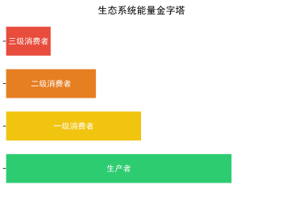
生态因素 ：非生物因素 （光、温度、水、空气、土壤等）+ 生物因素 （捕食、竞争、合作、寄生等）生态系统 ：生物部分（生产者——绿色植物、消费者——动物、分解者——细菌真菌）+ 非生物部分食物链 ：生产者和消费者之间吃与被吃的关系，起点是生产者 ，箭头指向捕食者。多条食物链交织成食物网物质和能量 沿食物链流动，能量逐级递减 （10%-20%），有毒物质沿食物链富集 （生物放大作用）生态系统的类型 ：森林（"绿色水库""地球之肺"）、湿地（"地球之肾"）、海洋（最大生态系统类型）、草原、淡水、农田、城市
生态因素类型 定义 实例 非生物因素 环境中非生命的物理化学因素 光照影响植物分布、温度影响动物冬眠、水分决定生物存活 生物因素——捕食 一种生物以另一种生物为食 狼吃羊、猫捉老鼠、青蛙吃昆虫 生物因素——竞争 两种生物争夺同一资源 稻田中杂草与水稻争夺阳光和养分 生物因素——合作 同种生物之间互助 蚂蚁群居、蜜蜂群体分工、狒狒群体等级 生物因素——寄生 一种生物生活在另一种体表或体内 蛔虫寄生在人体肠道、菟丝子寄生在植物上
【常见误区】
食物链的箭头表示能量流动方向（从被吃指向吃），不要画反 。且食物链中不包含分解者 和非生物部分，起点一定是生产者。
例题2：
某草原生态系统中存在食物链：草 → 鼠 → 蛇 → 鹰。若蛇的数量大量减少，短期内鼠的数量如何变化？
查看解析
答案：鼠的数量先增加后减少。 蛇减少 → 鼠的天敌减少 → 鼠大量繁殖（短期增多）→ 草被过度啃食 → 食物不足 → 鼠因饥饿和竞争数量减少（长期）。注意区分短期和长期效应。
第二单元 细胞
一、显微镜的使用
放大倍数 = 目镜倍数 × 物镜倍数
目镜越长放大倍数越小 ，物镜越长放大倍数越大
成像：倒像 （上下左右均颠倒），如"b"在视野中为"q"
视野中物像偏哪，玻片向哪移（同向移动原则）
从低倍镜换高倍镜：视野变暗 ，细胞数目变少 ，细胞体积变大
对光步骤：转动转换器使低倍物镜对准通光孔 → 调节遮光器 → 调节反光镜看到白亮视野
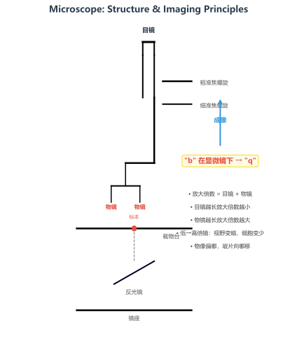
【常考易错】显微镜三大易错
① 换高倍镜后不能动粗准焦螺旋，只能用细准焦螺旋调焦。
例题3：
某显微镜目镜为10×，物镜为40×，放大倍数为多少？若在视野中看到"p"，实际玻片上写的是什么？
查看解析
答案： 放大倍数 = 10 × 40 = 400倍 。"p"在视野为倒像，上下左右颠倒后实际玻片上写的是"d "。可用旋转法判断：将"p"旋转180度即为"d"。
二、细胞的结构
动植物细胞共有的结构：
细胞膜 ——控制物质进出，有选择透过性；细胞质 ——生命活动的重要场所，物质交换的媒介；细胞核 ——含遗传信息，生命活动的控制中心；线粒体 ——呼吸作用场所，释放能量，为生命活动供能
植物细胞特有的结构：
细胞壁 ——支持和保护，全透性，成分是纤维素；叶绿体 ——光合作用的场所，将光能转变成化学能；液泡 ——含细胞液（切水果流出的汁液就是细胞液），成熟植物细胞中央有一个大液泡
比较项目 植物细胞 动物细胞 细胞壁 有（纤维素） 无 细胞膜 有 有 细胞核 有 有 细胞质 有 有 叶绿体 有（绿色部分） 无 线粒体 有 有 液泡 有（成熟细胞大液泡） 无（或极小）
【巧记】 细胞结构：膜控物质核控遗传，叶绿光合线产能，壁保支撑液存液，动植物别混一起。
三、细胞的生活
物质由分子 构成，物质进出细胞通过细胞膜 （选择透过性——需要的小分子能进，有害的不能进）
能量转换器 ：叶绿体（光能→化学能，只在植物细胞）、线粒体（化学能→生命活动所需能量，动植物都有）细胞核 是遗传信息库，DNA 是主要的遗传物质，染色体 = DNA + 蛋白质细胞分裂 ：细胞核先分裂 → 细胞质分裂 → 形成新细胞膜（植物还有新细胞壁）细胞分裂过程中染色体先复制加倍再均分 ，新细胞与原细胞染色体数目相同。这保证了遗传的稳定性
细胞生长 ：新细胞吸收营养物质，体积增大。但细胞不能无限长大——太大影响物质运输效率细胞分化 ：分裂产生的新细胞在形态、结构、功能上发生差异变化，形成不同组织
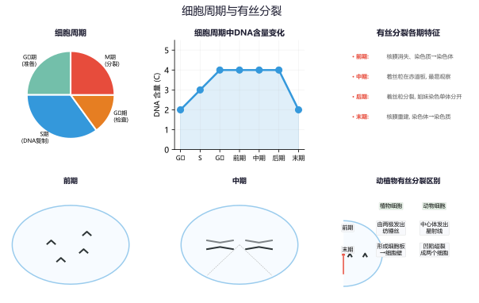
例题4：
某生物体细胞有12对染色体，经过一次细胞分裂后，子细胞中的染色体数目是多少？
查看解析
答案：12对（24条）。 细胞分裂过程中，染色体先复制加倍（变为24对/48条），再平均分配到两个子细胞中，所以每个子细胞仍有12对（24条）染色体，与原细胞相同。关键点 ：分裂前后染色体数目不变。
第三单元 生物圈中的绿色植物
一、植物类群
类群 代表植物 形态特点 繁殖方式 藻类 衣藻、水绵、海带、紫菜 无根茎叶分化，无输导组织 孢子（孢子生殖） 苔藓 葫芦藓、地钱、墙藓 有茎叶（无真正的根——假根），无输导组织，监测空气污染指示植物 孢子 蕨类 肾蕨、贯众、卷柏、满江红 有根茎叶，有输导组织，形成煤（古代蕨类） 孢子（孢子囊在叶背面） 裸子植物 松、柏、杉、银杏、苏铁 种子裸露无果皮包被，"活化石"银杏 种子 被子植物 大多数常见植物（桃、小麦、水稻等） 种子有果皮包被，六大器官齐全，分布最广 种子
【巧记】 植物进化顺口溜：藻无根叶苔无根，蕨有根茎有输导；裸子裸露无果皮，被子果皮包种子；孢子种子分两类，适应陆地渐完善。
二、种子的萌发
条件：自身条件 ——完整有活力的胚 + 充足的营养 + 未休眠环境条件 ——适宜的温度、一定的水分、充足的空气
种子结构：胚 （胚芽→发育成茎叶、胚轴→连接根和茎、胚根→发育成根、子叶→提供或转运营养）
单子叶植物（玉米、小麦）营养贮存在胚乳 中，双子叶植物（菜豆、花生）营养贮存在子叶 中
萌发过程：胚根最先突破种皮发育成根 → 胚轴伸长 → 胚芽发育成茎叶
例题5（实验探究）：
某同学设计种子萌发实验：1号瓶（干燥、室温、空气充足）、2号瓶（水淹没种子、室温）、3号瓶（适量水、冰箱冷藏）、4号瓶（适量水、室温、空气充足）。哪个瓶子中的种子会萌发？该实验说明了什么？
查看解析
答案：4号瓶萌发。 该实验采用对照法：结论 ：种子萌发的环境条件是适宜的温度、一定的水分、充足的空气，三者缺一不可。
三、光合作用与呼吸作用
光合作用
公式：CO₂ + H₂O →（光、叶绿体）→ 有机物 + O₂
实质：合成有机物，贮存能量（将光能→化学能，储存在有机物中）
场所：叶绿体 （含叶绿素，主要存在于叶片）
影响因素：光照强度（在一定范围内，光越强光合越快）、CO₂浓度、温度（过高或过低都会影响酶活性）、水
应用：合理密植、立体种植（套种）、提高大棚CO₂浓度（施气肥）、延长光照时间
呼吸作用
公式：有机物 + O₂ →（线粒体）→ CO₂ + H₂O + 能量
实质：分解有机物，释放能量（为生命活动提供动力）
场所：线粒体 （所有活细胞都有）
影响因素：温度（适当低温抑制呼吸）、水分、氧气浓度、CO₂浓度
应用：田间松土（增加氧气，促进根部呼吸）、低温储存蔬菜水果、粮食晒干保存、密封地窖（低氧抑制呼吸）
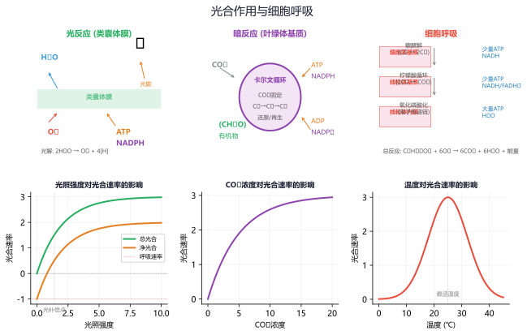
比较项目 光合作用 呼吸作用 场所 叶绿体（含叶绿素的细胞） 线粒体（所有活细胞） 条件 光（必须） 有光无光均可（时刻进行） 原料 CO₂、H₂O 有机物、O₂ 产物 有机物、O₂ CO₂、H₂O、能量 能量变化 贮存能量（光能→化学能） 释放能量（化学能→生命活动用） 意义 为生物圈提供有机物和氧气 为生命活动提供动力
光合作用与呼吸作用的关系 ：光合作用为呼吸作用提供有机物和氧气，呼吸作用为光合作用提供二氧化碳和能量。二者相互依存、对立统一。
【常见误区】
① 光合作用只在白天进行，呼吸作用白天黑夜都在进行 。只有含叶绿体的细胞 才能进行光合作用，根等部位不能。
四、其他重要内容
蒸腾作用 ：水分从气孔以水蒸气形式散失，拉动水和无机盐向上运输（蒸腾拉力），降低叶片温度防止灼伤气孔 ：由保卫细胞 控制开闭，是蒸腾作用的"门户"、气体交换的"窗口"——白天张开，夜晚关闭（减少水分散失）根吸水的主要部位：根尖的成熟区 （根毛区），有大量根毛增大吸水表面积
根尖四部分：根冠（保护）→ 分生区（分裂）→ 伸长区（细胞伸长）→ 成熟区（吸收水无机盐）
导管：运输水和无机盐（自下而上 ），由死细胞构成；筛管：运输有机物（自上而下 ），由活细胞构成
花的结构：花蕊最重要（雄蕊——花药产生花粉，花丝支持；雌蕊——柱头、花柱、子房），子房 发育成果实，胚珠 发育成种子，子房壁 发育成果皮
传粉方式：自花传粉（如小麦、水稻）和异花传粉（如苹果、桃），异花传粉需要媒介（风媒、虫媒）
绿色植物在生物圈中的作用：生产者 → 提供有机物和氧气 → 维持碳-氧平衡 → 促进水循环
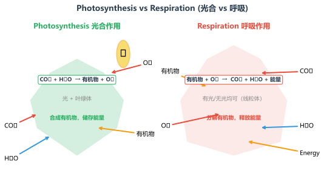
七年级下册
第四单元 生物圈中的人
一、人的由来
人类起源于森林古猿 ，证据：化石（如"露西"化石——距今320万年）
进化过程：直立行走 （人类进化最关键的里程碑）→ 制造工具 → 大脑发达 → 语言产生
生殖系统 ：睾丸（产生精子、分泌雄性激素）、卵巢（产生卵细胞、分泌雌性激素）、输卵管（受精场所）、子宫（胚胎发育场所）受精 ：精子和卵细胞在输卵管 结合形成受精卵，是新生命的起点胚胎发育 ：子宫 内发育280天（约40周），通过胎盘和脐带从母体获取营养和氧气，排出二氧化碳等废物青春期发育特点：身高体重突增（显著特征）、生殖器官发育成熟、第二性征出现（雄性激素/雌性激素作用）、大脑功能增强、心理变化大
二、消化系统
消化道 ：口 → 咽 → 食道 → 胃 → 小肠 → 大肠 → 肛门消化腺 ：唾液腺（分泌唾液含淀粉酶）、肝脏（最大的消化腺 ，分泌胆汁——不含消化酶，乳化脂肪）、胰腺（分泌胰液含多种酶）、胃腺（分泌胃液含胃蛋白酶）、肠腺（分泌肠液含多种酶）三大营养物质的消化 ：
淀粉：口腔（唾液淀粉酶）→ 麦芽糖 → 小肠（肠液、胰液中的酶）→ 葡萄糖
蛋白质：胃（胃蛋白酶）→ 多肽 → 小肠（肠液、胰液中的酶）→ 氨基酸
脂肪：小肠（胆汁乳化）→ 脂肪微粒 → 小肠（肠液、胰液中的酶）→ 甘油 + 脂肪酸
小肠 是消化和吸收的主要场所 ：长（5-6米）、大（环形皱襞+小肠绒毛，增大吸收面积）、薄（绒毛壁仅一层细胞）大肠：吸收少量水、无机盐和维生素
维生素 缺乏症 食物来源 维生素A 夜盲症、干眼症 动物肝脏、胡萝卜（含β-胡萝卜素） 维生素B₁ 脚气病、神经炎 糙米、谷物、瘦肉 维生素C 坏血病、抵抗力下降 新鲜蔬菜、水果（尤其柑橘、猕猴桃） 维生素D 佝偻病（儿童）、骨质疏松（老人） 鱼肝油、蛋黄、日光浴可促进合成
【巧记】 维生素缺乏症：VA夜盲V1脚（脚气病），VC坏血VD佝（佝偻病）。缺钙也患佝偻病，VD促进钙吸收。
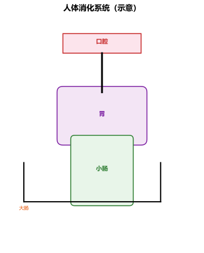
三、呼吸系统
组成：呼吸道 （鼻→咽→喉→气管→支气管）+ 肺 （呼吸系统的主要器官，气体交换的场所）
呼吸道功能：保证气体通畅 + 温暖（毛细血管）、湿润（黏液）、清洁（鼻毛、纤毛）空气
呼吸运动 ：吸气时膈肌收缩 （膈顶下降），肋间肌收缩（肋骨上升），胸廓扩大，肺内气压降低（小于外界），气体进入肺肺泡 适于气体交换的特点：数量多（约3亿个）、壁薄（一层扁平上皮细胞）、外有丰富的毛细血管网和弹性纤维气体交换 ：扩散作用 ——氧气从肺泡扩散进入血液（与血红蛋白结合），二氧化碳从血液扩散进入肺泡呼出的气体成分变化：氧气减少，二氧化碳增多，水蒸气增多
四、循环系统
血液 ：血浆（运输血细胞、营养、废物）+ 血细胞（红细胞——运输氧气，含血红蛋白；白细胞——吞噬病菌，防御；血小板——止血凝血）
血管类型 血流方向 管壁特点 血流速度 功能 动脉 心脏→全身 壁厚、弹性大 快 输送血液离开心脏 静脉 全身→心脏 壁薄、弹性小、有静脉瓣 慢 输送血液回心脏（防止倒流） 毛细血管 连接最小动静 极薄（一层细胞） 极慢 物质交换场所（红细胞单行通过）
心脏 ：四腔 ——左心房（连通肺静脉）、左心室（连通主动脉，壁最厚 ）、右心房（连通上/下腔静脉）、右心室（连通肺动脉）体循环 ：左心室 → 主动脉 → 全身各级动脉 → 毛细血管（物质交换）→ 各级静脉 → 上/下腔静脉 → 右心房（动脉血→静脉血）肺循环 ：右心室 → 肺动脉 → 肺部毛细血管（气体交换）→ 肺静脉 → 左心房（静脉血→动脉血）体循环和肺循环同时进行，汇合于心脏 ，组成了完整的血液循环
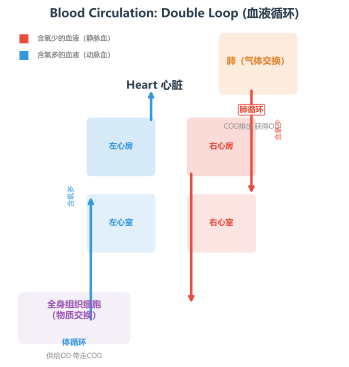
【常考易错】体循环与肺循环
① 肺动脉里流的是静脉血 （含氧少、CO₂多），肺静脉里流的是动脉血（含氧多）——不要被血管名称误导。
【巧记】 血液循环口诀：体循环左心室，泵到全身回到右心房；肺循环右心室，肺部交换回左心房。左室壁厚把血射，动血静血要分清。
血型与输血 ：以输同型血为原则。紧急时O型可少量输给其他血型（"万能供血者"），AB型可接受少量其他血型（"万能受血者"）血红蛋白：红细胞中含，在氧浓度高时与氧结合（鲜红色），氧浓度低时分离（暗红色）
例题6：
某人脚背受伤发炎，医生在其臀部肌肉注射消炎药。请写出药物到达脚背发炎部位所经过的循环路径（用文字和箭头表示）。
查看解析
答案： 臀部毛细血管 → 各级静脉 → 下腔静脉 → 右心房 → 右心室 → 肺动脉 → 肺部毛细血管 → 肺静脉 → 左心房 → 左心室 → 主动脉 → 各级动脉 → 脚背毛细血管。关键思路 ：药物从静脉入血 → 先经体循环回右心 → 肺循环 → 左心 → 体循环到患处。必须经过心脏两次、肺一次。
五、泌尿系统
组成：肾脏（形成尿液 ，是泌尿系统的主要器官）、输尿管（输送尿液）、膀胱（暂时贮存尿液 ）、尿道（排出尿液）
肾单位 ：肾脏结构和功能的基本单位，每个肾约100万个肾单位，由肾小球 + 肾小囊 + 肾小管组成尿液形成 ：肾小球过滤作用 （血细胞和大分子蛋白不能滤过，形成原尿——每天约180升）→ 肾小管重吸收作用 （全部葡萄糖、大部分水、部分无机盐被重吸收回血液，形成终尿——每天约1.5升）排尿意义：排出废物、调节体内水和无机盐平衡、维持组织细胞正常生理功能
六、神经调节
神经系统 ：中枢神经系统（脑+脊髓）、周围神经系统（脑神经+脊神经）神经元 ：神经系统的结构和功能单位，由细胞体和突起（树突+轴突）构成，有接受刺激、产生和传导兴奋的功能反射 ：通过神经系统对刺激作出的规律性反应（神经系统调节生命活动的基本方式）
比较项目 简单反射（非条件反射） 复杂反射（条件反射） 形成 生来就有，先天性的 后天学习建立的 神经中枢 脊髓或脑干（低级中枢） 大脑皮层（高级中枢） 神经联系 永久、固定 暂时、可消退 实例 膝跳反射、缩手反射、眨眼反射、吮吸反射 望梅止渴、谈虎色变、条件反射的建立
反射弧 ：反射的结构基础——感受器 → 传入神经 → 神经中枢 → 传出神经 → 效应器（缺一不可）感觉器官 ：眼 （晶状体相当于镜头，视网膜成像——成倒立缩小的实像，近视配凹透镜矫正，远视配凸透镜矫正）；耳 （耳蜗内有听觉感受器，听觉在大脑皮层形成）
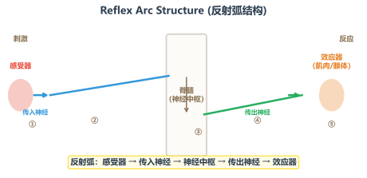
例题7：
当手指被针刺到后，手立刻缩回。请写出该缩手反射的反射弧路径。缩手反射属于哪种类型？
查看解析
答案： 缩手反射的反射弧：手指皮肤感受器 （痛觉感受器）→ 传入神经 → 脊髓（神经中枢 ）→ 传出神经 → 手臂肌肉（效应器 ）→ 手臂收缩。
属于简单反射（非条件反射） ——反射中枢在脊髓，不需要大脑皮层参与。但痛觉是在大脑皮层产生的，所以先缩手后感觉痛。
七、激素调节
激素 分泌腺体 主要作用 分泌异常 生长激素 垂体 促进生长（尤其骨骼和肌肉） 侏儒症（幼年不足）、巨人症（幼年过多） 甲状腺激素 甲状腺 促进新陈代谢和生长发育，提高神经系统兴奋性 呆小症（幼年不足）、甲亢（过多），缺碘合成不足 → 地方性甲状腺肿（大脖子病） 胰岛素 胰岛 降低血糖浓度（促进血糖合成糖原、加速血糖分解） 不足 → 糖尿病 （多饮、多食、多尿、消瘦） 肾上腺素 肾上腺 促使心跳加快、血压升高、血糖升高（应激反应） 过多 → 心跳过快、血压过高 性激素 睾丸/卵巢 促进生殖器官发育和第二性征出现 分泌不足 → 性器官发育迟缓
神经调节与激素调节的关系 ：神经调节起主导作用，激素调节受神经系统的控制，二者相互配合，共同调节生命活动。
八年级上册
第五单元 生物圈中的其他生物
一、动物的主要类群
无脊椎动物 （体内无脊柱）
腔肠动物 ：水螅、水母、海蜇、珊瑚虫 —— 辐射对称，有口无肛门，有刺细胞（捕食和防御）扁形动物 ：涡虫、血吸虫、猪肉绦虫 —— 两侧对称，有口无肛门，背腹扁平，多数寄生线形动物 ：蛔虫、蛲虫、钩虫 —— 有口有肛门，体表有角质层（抵抗消化液），寄生生活环节动物 ：蚯蚓、沙蚕、水蛭 —— 身体分节，靠刚毛或疣足辅助运动，环带（生殖带）软体动物 ：河蚌、蜗牛、乌贼、章鱼 —— 身体柔软，有外套膜（形成贝壳），运动器官是足节肢动物 ：蝗虫、蜜蜂、蝴蝶、蜘蛛、虾、蟹 —— 最大的动物类群 ，体表有外骨骼（保护和防止水分蒸发），足和触角分节，身体分头胸腹
无脊椎动物类群 代表动物 关键特征 腔肠动物 水螅、水母、珊瑚虫 辐射对称、有口无肛门、有刺细胞 扁形动物 涡虫、血吸虫 两侧对称、有口无肛门、背腹扁平 线形动物 蛔虫、蛲虫 有口有肛门、体表角质层 环节动物 蚯蚓、沙蚕 身体分节、刚毛辅助运动 软体动物 河蚌、蜗牛、乌贼 身体柔软、外套膜、贝壳 节肢动物 蝗虫、蜜蜂、虾 外骨骼、足触角分节、最大类群
【巧记】 无脊椎动物进化顺序：腔肠扁形线形虫，环节软体节肢精。口器肛门有先后，结构渐复杂更适应。
脊椎动物 （体内有脊柱）
鱼类 ：用鳃呼吸，用鳍游泳，体表有鳞片，侧线 感知水流和方向，变温 动物。代表：鲫鱼、鲨鱼、带鱼两栖动物 ：青蛙、蟾蜍、大鲵（娃娃鱼）—— 幼体用鳃呼吸（水中），成体用肺+皮肤辅助呼吸（陆上），变态发育 ，卵生，变温爬行动物 ：蜥蜴、蛇、龟、鳄、壁虎 —— 用肺呼吸，真正陆生脊椎动物 （体内受精，受精卵有卵壳保护），体表有角质鳞片或甲，变温鸟类 ：身体流线型（减小阻力），前肢变成翼，双重呼吸（气囊辅助肺呼吸 ——吸气呼气均交换气体），恒温，胸肌发达哺乳动物 ：胎生哺乳（提高后代成活率），体表有毛（保温），牙齿分化（门齿切断、犬齿撕咬、臼齿咀嚼），最高等的动物类群 ，恒温，有膈肌
【常见误区】动物类群
① 鲸鱼是哺乳动物不是鱼 ——用肺呼吸、胎生哺乳。鳄鱼是爬行动物不是两栖动物 ——体内受精、卵有壳、用肺呼吸。蜘蛛、蜈蚣是节肢动物不是昆虫 ——昆虫的特征：三对足、两对翅、身体分头胸腹。蜘蛛有四对足。
例题8：
下列哪种动物是真正的陆生脊椎动物，且生殖发育完全摆脱了对水环境的依赖？A. 青蛙 B. 蜥蜴 C. 大鲵 D. 蟾蜍
查看解析
答案：B（蜥蜴）。 爬行动物体内受精、产大型有壳卵，胚胎在卵内发育，完全摆脱了对水的依赖。两栖动物（A、C、D）的受精和幼体发育仍离不开水。
二、动物的运动和行为
运动系统 ：骨骼 + 骨骼肌（骨是杠杆、关节是支点、骨骼肌收缩提供动力）关节 ：关节面（关节头+关节窝，覆盖关节软骨减小摩擦）+ 关节囊（包裹，分泌滑液）+ 关节腔（含滑液，润滑）骨骼肌受神经刺激收缩 牵动骨绕关节活动。骨和关节本身不收缩，是骨骼肌牵拉的结果
一组运动至少需要两组骨骼肌配合——屈肘（肱二头肌收缩，肱三头肌舒张）、伸肘（肱三头肌收缩，肱二头肌舒张）
先天性行为 ：生来就有，由遗传物质决定（如蜘蛛结网、蜜蜂采蜜、鸟类迁徙）学习行为 ：后天形成，建立在遗传因素基础上，通过学习和经验积累（如鹦鹉学舌、猴子骑车、海豚顶球）社会行为 ：群体内有组织、有分工、有等级（如蚂蚁、蜜蜂的群体分工；狒狒群体的等级序列）——信息交流方式：动作、声音、气味
三、细菌和真菌
项目 细菌 真菌 细胞结构 无成形的细胞核（原核生物），有DNA集中区域 有成形的细胞核（真核生物） 代表 球菌、杆菌、螺旋菌（按形态分） 酵母菌（单细胞）、霉菌（青霉、曲霉）、蘑菇 繁殖方式 分裂繁殖 （速度快，条件适宜时每20-30分钟分裂一次）孢子繁殖（酵母菌还可出芽繁殖） 营养方式 多数异养（寄生或腐生），少数自养（光合细菌、化能合成细菌） 异养（腐生或寄生） 与人类关系 致病（肺炎球菌）、制醋（醋酸菌）、固氮（根瘤菌） 制馒头面包（酵母菌）、酿酒、产抗生素（青霉菌）
腐生 ：分解动植物遗体中的有机物，在自然界物质循环中起重要作用（将有机物分解为CO₂、水、无机盐）病毒 ：无细胞结构，由蛋白质外壳+内部遗传物质（DNA或RNA）组成，必须在活细胞内寄生 ，离开活细胞会变成结晶体病毒分类：动物病毒（流感病毒、艾滋病病毒）、植物病毒（烟草花叶病毒）、细菌病毒（噬菌体）
【巧记】 细菌真菌区分：细菌原核无成核，真菌真核有成形。分裂孢子各繁殖，病毒最简无胞身。
第六单元 生物的多样性及其保护
分类单位 ：界门纲目科属种（种 是最基本的分类单位，也是生物分类的"物种"概念）亲缘关系：同种最亲。分类单位越小，共同特征越多；分类单位越大，亲缘关系越远
生物多样性 包含三个层次：物种多样性 （地球上生物种类的丰富程度）、遗传（基因）多样性 （同种不同个体的基因差异）、生态系统多样性 （不同类型的生态系统）生物多样性的价值：直接价值（食用、药用、工业原料）、间接价值（生态功能——重要）、潜在价值（未发现的）
生物多样性受威胁的原因：栖息地破坏（最主要原因）、过度捕猎、外来物种入侵、环境污染
保护生物多样性最有效的措施：建立自然保护区 （就地保护）；迁地保护（动物园、植物园、基因库）
【巧记】 分类等级口诀：界门纲目科属种，同种最近特征同。级别越小越相似，级别越远差异多。
八年级下册
第七单元 生物圈中生命的延续和发展
一、生物的生殖和发育
有性生殖 ：两性生殖细胞（精子和卵细胞）结合形成受精卵 → 发育成新个体（后代有更多变异，适应环境能力强）无性生殖 ：不经过两性生殖细胞结合，由母体直接产生新个体（后代遗传物质与母体相同，能保持优良性状）嫁接 ：接穗+砧木，成活关键是使形成层（分生组织）紧密结合。嫁接后果实性状由接穗决定完全变态发育 ：卵 → 幼虫 → 蛹 → 成虫（如家蚕、蝶、蚊、蝇、蜂）——幼虫和成虫形态结构差异大不完全变态发育 ：卵 → 若虫 → 成虫（如蝗虫、蟋蟀、蜻蜓、蝉）——若虫和成虫形态相似两栖动物的发育：变态发育 （蝌蚪有尾无四肢用鳃呼吸 → 青蛙有四肢无尾用肺呼吸）
鸟卵 的结构：胚盘（含细胞核，发育成雏鸟）、卵黄（提供主要营养）、卵白（提供营养和水分）、气室（提供空气，位于钝端）、系带（固定卵黄）、卵壳（保护，有气孔透气）
二、生物的遗传和变异
基因 是有遗传效应的DNA片段 ，DNA是染色体的组成部分，染色体存在于细胞核中体细胞中染色体成对 存在，生殖细胞（精子、卵细胞）中染色体成单 存在，数目是体细胞的一半
人的体细胞有23对染色体（22对常染色体+1对性染色体）
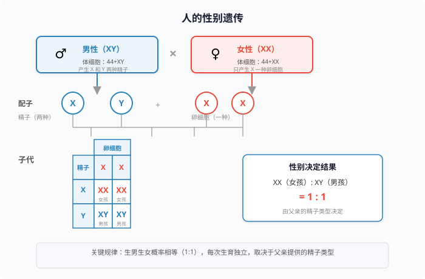
基因的显隐性 ：显性基因控制显性性状（大写字母，如A），隐性基因控制隐性性状（小写字母，如a）遗传图解 （孟德尔杂交实验）：亲代（P）→ 配子（生殖细胞）→ 子一代（F₁）→ 子二代（F₂）
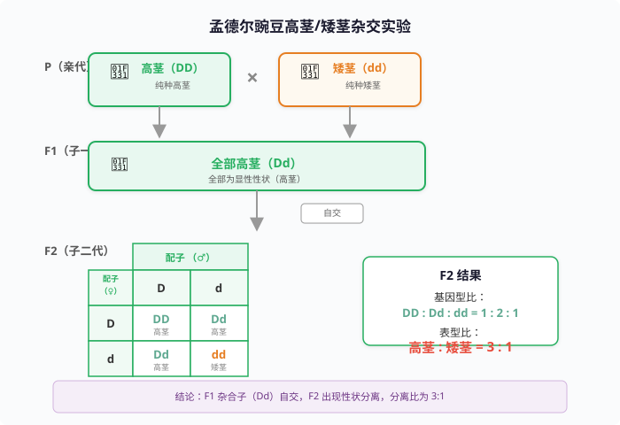
例题9（遗传图解）：
豌豆的高茎（D）对矮茎（d）为显性。现将纯种高茎（DD）与纯种矮茎（dd）杂交，F₁全部为高茎。F₁自交产生的F₂中，高茎与矮茎的比例是多少？基因型比例是多少？
查看解析
答案： F₂表现型比例 = 高茎 : 矮茎 = 3 : 1 1 : 2 : 1
解析： P：DD × dd → 配子：D、d → F₁：Dd（全部高茎）。
考查重点 ：显隐性判断、遗传图解书写、分离定律的实质——等位基因在减数分裂时分离。
变异 ：可遗传变异 （遗传物质改变——基因突变、染色体变异，可遗传给后代。如太空育种、化学诱变）和不可遗传变异 （仅环境引起，遗传物质未变。如晒黑、营养不良矮小）杂交水稻——袁隆平院士的贡献，利用基因多样性 （野生稻的优良基因）进行杂交育种
转基因技术：将外源基因转入生物体内，使其表现新的性状（如转基因抗虫棉——将苏云金杆菌的杀虫蛋白基因转入棉花）
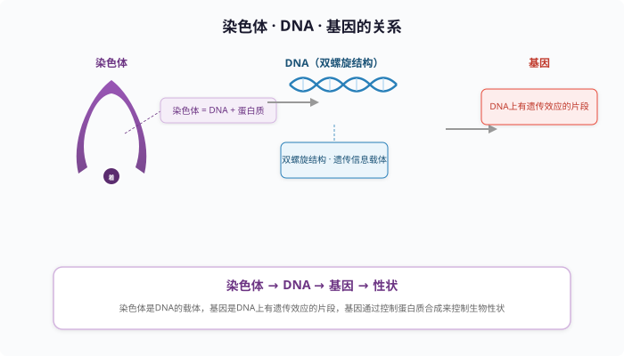
【常考易错】遗传判断
① 显隐性判断口诀："无中生有为隐性"——父母都正常，生出患病孩子，则患病为隐性性状。精子卵细胞随机结合 是形成不同基因型的原因。
三、生物的进化
研究进化的最重要证据：化石 （越古老的地层中生物化石越简单、越低等；越晚近的地层中越复杂、越高等）
其他进化证据：比较解剖学（同源器官——如鲸的鳍、蝙蝠的翼和人的手臂骨骼结构相似）、分子生物学（DNA序列相似性）
自然选择学说 （达尔文）：过度繁殖 → 生存斗争 → 遗传变异 → 适者生存 自然选择的结果：生物适应环境、生物多样性的形成。变异是不定向 的，自然选择是定向 的
典型例子：长颈鹿的长颈（长期自然选择形成）、工业区桦尺蛾体色变黑（工业污染选择）、细菌抗药性的形成（抗生素选择）
【巧记】 自然选择四步曲：过度繁殖是前提，生存斗争是动力，遗传变异是基础，适者生存是结果。变异不定向，选择定向推。
例题10（自然选择）：
农民喷洒农药杀灭害虫，开始效果很好，但几年后发现农药效果越来越差。请用自然选择学说解释。
查看解析
解析： ① 害虫群体中存在变异 ，有的个体具有抗药性基因，有的没有。定向选择 作用——不具有抗药性的个体被淘汰，具有抗药性的个体存活下来并繁殖后代。关键理解 ：农药没有"诱导"害虫产生抗药性，而是选择了本来就存在的抗药性变异。
第八单元 健康地生活
一、传染病和免疫
传染病 三环节：传染源 （能散播病原体的人或动物）、传播途径 （空气、水、食物、接触、蚊虫等）、易感人群 （对某种传染病缺乏免疫力而容易感染的人群）预防措施：控制传染源（隔离病人、消毒处理）、切断传播途径（戴口罩、勤洗手、消灭蚊虫）、保护易感人群（接种疫苗、锻炼身体）
病原体 ：致病的细菌、病毒、寄生虫、真菌等（如结核杆菌、流感病毒、疟原虫）免疫 ：人体识别和清除"非己"物质的功能，有防御、自我稳定、免疫监视三大功能
非特异性免疫 （第一、二道防线，天生就有，对多种病原体有效）→ 皮肤屏障、黏膜、吞噬细胞、溶菌酶特异性免疫 （第三道防线，后天获得，针对特定病原体）→ 抗体+抗原机制
防线 组成 类型 特点 第一道防线 皮肤、黏膜 非特异性免疫 阻挡病原体侵入 第二道防线 吞噬细胞、溶菌酶 非特异性免疫 溶解、吞噬病原体 第三道防线 免疫器官+免疫细胞（淋巴细胞） 特异性免疫 产生抗体，针对性强
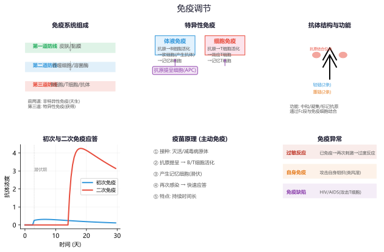
疫苗 ：通常用失活的或减毒的病原体制成，接种后刺激人体产生抗体，属于抗原 计划免疫 ：有计划的预防接种（如卡介苗——预防结核病、乙肝疫苗——预防乙肝、百白破三联疫苗）抗原 ：引起人体产生抗体的物质（如病毒、细菌、花粉）；抗体 ：免疫细胞产生的抵抗抗原的特殊蛋白质
【常考易错】抗原与抗体
① 疫苗属于抗原不是抗体 ——疫苗是"敌人"（抗原），刺激人体自己产生"武器"（抗体）。
二、用药与急救
安全用药 ：处方药（Rx）需医生开，非处方药（OTC）可自购——用药前仔细阅读药品说明书，关注适应症、用法用量、禁忌、不良反应、有效期中药 vs 西药：中药以植物药为主（如板蓝根），西药是化学合成药（如阿莫西林）
急救方法 ：心肺复苏（胸外按压30次+人工呼吸2次，交替进行，按压深度5-6cm，频率100-120次/分）、止血包扎、骨折固定（固定骨折部位上下两个关节）出血判断 ：动脉出血（鲜红色、喷射状）→ 近心端 止血；静脉出血（暗红色、平稳流出）→ 远心端 止血；毛细血管出血（渗血）→ 消毒包扎
例题11（急救应用）：
小明在路上看到一位伤者手臂伤口处有鲜红色血液喷射出来，他应该采取什么措施？在哪个位置包扎止血？
查看解析
答案： 鲜红色血液喷射状为动脉出血 ，应立即在伤口近心端 用力按压或扎止血带止血。同时拨打120急救电话。注意每隔30分钟左右放松一次止血带，防止组织缺血坏死。
三、健康的生活方式
健康的三个维度：身体健康、心理健康、社会适应良好 （WHO定义——不仅仅是无病或不虚弱）
毒品危害极大：损害神经系统、循环系统、免疫系统；导致家破人亡，必须坚决抵制
吸烟危害：含尼古丁、焦油等致癌物质，损害呼吸系统（肺癌）和循环系统（心血管疾病）
酗酒危害：损伤肝脏（酒精肝、肝硬化）、损害神经系统（反应迟钝、记忆力下降）
合理营养：食物多样、谷类为主、多吃蔬果、适量鱼禽蛋瘦肉、少盐少油
规律作息：保证充足睡眠（初中生建议8-10小时），不熬夜
适度运动、保持积极心态、学会应对压力
附录：易错易混速记
常考"之最"
最大生态系统——生物圈 | 最大消化腺——肝脏 | 消化吸收主要场所——小肠 | 呼吸主要器官——肺 | 形成尿液——肾脏 | 最高等动物类群——哺乳动物 | 最大动物类群——节肢动物 | 最基本分类单位——种 | 遗传物质主要载体——DNA | 人体内最粗的血管——主动脉 | 心脏壁最厚的腔——左心室 | 神经系统的结构和功能单位——神经元
常考"结构功能对应"
细胞膜——控制物质进出 | 细胞核——遗传信息库 | 叶绿体——光合作用 | 线粒体——呼吸作用 | 气孔——蒸腾作用门户 | 根毛——吸收水无机盐 | 小肠绒毛——吸收营养 | 肺泡——气体交换 | 肾单位——形成尿液 | 耳蜗——听觉感受器 | 视网膜——视觉感受器 | 关节——运动的支点 | 胎盘——物质交换（母体与胎儿）
实验一：绿叶在光下制造有机物（淀粉）
步骤：暗处理（消耗原有淀粉）→ 部分遮光 → 光照 → 酒精脱色（隔水加热，溶解叶绿素）→ 清水漂洗 → 碘液染色
结论：光是光合作用的必要条件 ，淀粉是光合作用的产物。遮光部分不变蓝（无淀粉），见光部分变蓝（有淀粉）。
实验二：观察洋葱/人体口腔上皮细胞
洋葱表皮细胞：清水、碘液染色；口腔上皮细胞：生理盐水 （维持细胞正常形态，防止吸水涨破）、稀碘液染色
关键：盖盖玻片时一侧先接触液滴再缓缓放下，避免产生气泡。
实验三：种子萌发的环境条件
对照实验：设置三组对照（温度、水、空气），每组10-20粒种子减少偶然性。对照组 （适宜温度+适量水+充足空气）与实验组对比，一次只能有一个变量。
实验四：馒头在口腔中的变化
设置三支试管：①馒头碎屑+唾液（37℃水浴）→ 不变蓝（淀粉被分解）
结论：唾液中的淀粉酶能消化淀粉（化学消化），牙齿的咀嚼和舌的搅拌（物理消化）能促进消化。
实验五：观察小鱼尾鳍血液流动
用湿棉花包裹鳃部和躯干部（保持呼吸），显微镜低倍镜观察。判断依据：红细胞单行通过 的是毛细血管，血流方向从分支到主干是静脉，从主干到分支是动脉。
【考前必记】易混概念对比
① 胚盘（鸟卵中发育成雏鸟）vs 胎盘（哺乳动物母体与胎儿交换物质）
高频考点"过程排序"
根尖结构（从顶端往上）：根冠 → 分生区 → 伸长区 → 成熟区